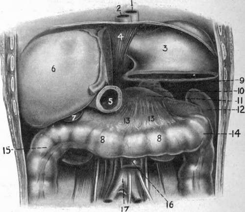

The Stomach
Description
This section is from the book "Surgical Anatomy", by John A. C. MacEwen. Also available from Amazon: Surgical Anatomy.
The Stomach
The Stomach lies in the supramesocolic compartment of the abdomen, almost entirely to the left of the middle line, occupying a space immediately under the left dome of the diaphragm and left lobe of the liver, and extending down into the epigastric region. The space which it occupies, and to a less extent its relations, vary greatly according to its state of distension. The .cardia, or junction between the oesophagus and the stomach, is the most fixed point, and is situated deeply, about 4 inches behind and 1 inch outside the junction of the seventh left costal cartilage with the sternum, about the level of the eleventh dorsal vertebra. From this point the lesser curvature, or upper and right border, curves round the spine downwards, forwards, and to the right to the pylorus, giving attachment above to the lesser, or gastro-hepatic, omentum. The greater curvature is at first directed backwards and upwards, forming an angle with the cardia, and then sweeps round, to run from left to right, and slightly forwards and downwards, and finally it runs'up to the pylorus.
It gives attachment to the great omentum, and on the left to the gastro-splenic omentum. The level of the greater curvature varies greatly, according to the amount of distension, and it carries with it the transverse colon, which lies in close relationship to it. When not distended, it generally corresponds to a horizontal line, joining the tips of the tenth costal cartilages. This greater curvature sometimes presents a distinct notch, which indicates the division between the body of the stomach and the pyloric portion. The expanded portion of the stomach which lies to the left of the cardia is called the fundus, and its highest point lies beneath the diaphragm just above and inside the apex of the heart. The portion lying between fundus and pylorus is called the body. The pyloric end of the stomach is more movable than the cardiac, and varies in position, according to the amount of distension of the stomach. Generally it lies about ½ inch to the right side of the mid-point between the suprasternal notch and symphysis, or 2¾ inches above the umbilicus, being situated below and anterior to the cardia. It is described as consisting of a wider antrum, or vestibule, to the left, and canal on the right, leading up to the valve. The pyloric valve is marked on the surface by a slight constriction, is directed from before backwards, and lies upon the neck of the pancreas with the liver above it, and the gall-bladder on its right.
Fig. 25. - The Supramesocolic Compartment of the Abdomen. Portions of Stomach and Liver have been removed to display the Diaphragm formed by the Transverse Colon and Mesocolon with Kidney, Spleen, and Pancreas.
1. | 7. | Gall-bladder. | 13. | Transverse mesocolon (forming shelf or diaphragm). | |
2. | ( Esophagus. | 8. | Transverse colon. | ||
3. | Stomach. | 9. | Suprarenal. | 14. | Splenic flexure. |
4. | Diaphragm. | IO | Kidney. | 15. | Hepatic flexure. |
5. | Pylorus. | 11. | Pancreas. | 16. | I biodeno-jejunal junction. |
O | Right lobe of liver. | 12. | Spleen. | 17. | Descending aorta. |
The stomach may be said to occupy a wedge-shaped space (supramesocolic compartment of the abdomen), with rounded angles at the base ; the apex, situated on the right side, being formed by the junction of the liver and the transverse colon. Above, from left to right, are the diaphragmatic dome, and then the left lobe of the liver sloping down to the right to meet the colon. Below lie the spleen behind and to the left, and more to the front the upper surface of the pancreas, while the left suprarenal and kidney fill a slight interval between the two posteriorly. In front of the pancreas are the transverse mesocolon and transverse colon. Thus a floor is formed for the stomach of spleen, kidney, and pancreas behind, with transverse mesocolon and colon in front, these latter structures forming almost a diaphragm, separating the stomach above in the supramesocolic compartment from the underlying small intestine in the submesocolic compartment. The base of the wedge, situated on the left side, is formed by the spleen and the diaphragm. This space is closed in, in front, by the diaphragm, the fifth to the eighth ribs and the costal cartilages, and a portion of the anterior abdominal wall and of the liver.
The whole blood-supply of the stomach, which is very abundant, is derived directly or indirectly from the cceliac axis. The coronary artery arises from it directly, and runs along the lesser curvature to join the pyloric branch of the hepatic. The arch thus formed gives off several large branches. On the greater curvature an arch is formed by the gastrodtiodenal of the hepatic giving off the right, and the splenic giving off the left gastro-epiploic arteries, which vessels freely anastomose, and, in addition to the vasa brevia from the splenic, supply branches to the stomach wall. The coronaiy and the pyloric vein join the portal trunk; the right gastro-epiploic joins the superior mesenteric, the left the splenic, along with the vasa brevia veins.
The lymphatics run to the superior and inferior gastric glands, situated along the lesser and greater curves respectively, and the splenic, and finally join the cceliac glands.
The nerve-supply is from the pneumogastrics, the left lying on the front, and the right on the posterior surface of the oesophagus, and then reaching the upper and lower stomach surfaces respectively, which they supply after joining with the sympathetic fibres of the cceliac plexus. The sympathetic nerves are associated with the seventh and eighth spinal segments, and thus in stomach diseases the skin supplied by these segments may become tender or even painful, pain being complained of below the angle of the scapula.
Not infrequently the stomach may be found to be abnormally contracted or dilated. Contraction is generally met with in cases of stricture of the oesophagus, where it may occur to such an extent as to render certain operations almost impossible. Also on account of its small size, and the fact that the transverse colon frequently ascends in front of it, it may be difficult to find after the abdomen has been opened. In such cases it is advisable to run the finger upwards and 'backwards until the under surface of the liver is reached, and then push forwards the structure in front of it. In cases of contraction the pylorus generally lies almost in the middle line. When the stomach dilates, the fundus pushes the diaphragm upwards, and thus sometimes causes jaintness in flatulent distension from actual pressure on the heart. The body of the stomach also ascends while the greater curvature comes forwards, displacing the colon and small intestines downwards. The pyloric segment is displaced further to the right, and becomes markedly curved. Acute or chronic dilatation may arise from a variety of causes, such as pyloric obstruction (stenotic gastrectasis) and atony of the muscular coats (atonic gastrectasis), etc. As a rule, there is first a period of muscular hypertrophy, but this is generally followed by atrophy, after which the stomach may become very large, pressing upwards on heart and lungs, causing palpitation and dyspnoea, while below it may reach almost, if not quite, to the pubis (ptosis). The pylorus also becomes dragged down, so as to be palpable in some cases through the abdominal wall.
Continue to: